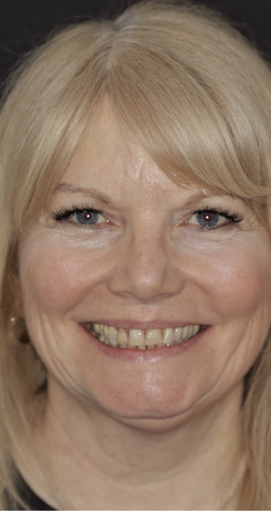
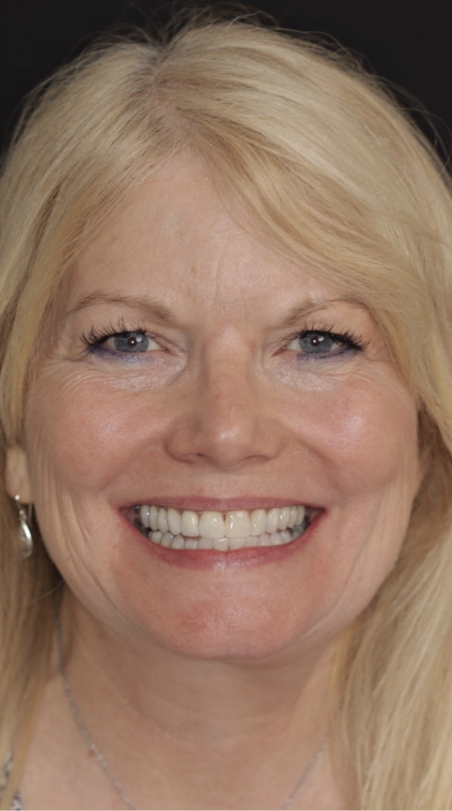

Case — Full rehabilitation
Ready for her wedding day
She wanted her dream smile before her wedding — without orthodontics and without implants. Gum health came first, then caries removal, eight weeks of whitening, the old crowns and bridges replaced, and the gum line contoured to an even smile.
- Staged over months, finished in time
- Old crowns & bridges replaced
- No orthodontics, no implants